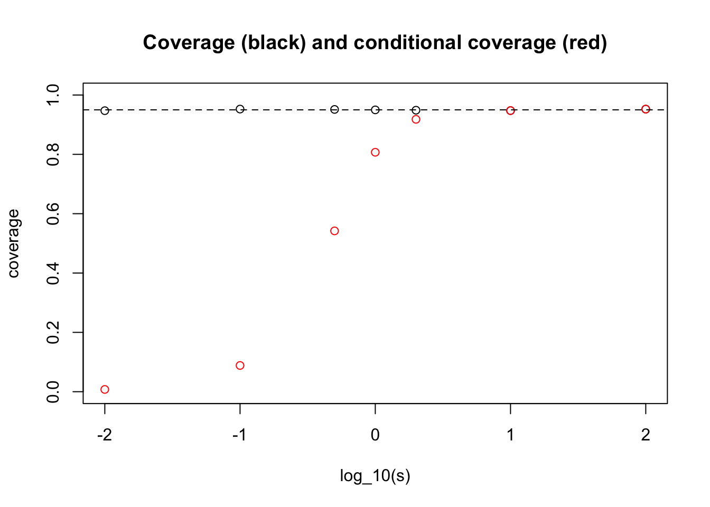

Last updated: 2017-04-17
Code version: 73bf57d
You should be familiar with the result that if \(X \sim N(\theta,\sigma^2)\) then \(X \pm 1.96\sigma\) is a 95% Confidence Interval (CI) for \(\theta\).
Suppose we consider going through life computing normal 95% CIs in lots of different situations.
That is, on occassion \(j\) (\(j=1,2,3,\dots\)) we observe data \[X_j | \theta_j, \sigma_j \sim N(\theta_j, \sigma_j),\] where \(\theta_j\) is unknown to us. For simplicity let us further assume that in each case the measurement error standard deviation, \(\sigma_j=1\), and is known to us.) Then we compute the standard 95% CI for \(\theta_j\): \[CI_j = [X_j -1.96, X_j + 1.96].\]
Consider now two questions:
What proportion of our intervals \(CI_j\) cover (contain) the true value of \(\theta_j\)?
Of the occasions when our interval \(CI_j\) excludes 0, what proportion will our interval cover the true value of \(\theta\)?
It is important to recognize that the answers to these two questions will be different.
The answer to i) is 95% because the definition of a 95% CI ensures this. This corresponds to the usual notion of the “coverage” of the CIs.
However, the answer to ii) will not generally be 95%. To see this, consider the extreme case where the \(\theta_j\) we consider over our life are all actually exactly equal to 0. Then the answer to the second question will be “never”!. More generally, the answer to ii) depends on the distribution of the actual \(\theta_j\) values that we consider during our life.
Before setting out the analytic calculation, we will illustrate by simulation. Suppose first that the distribution of \(\theta_j\) we encounter over our life is \(N(0,s^2)\). Let us see by simulation how our answer to ii) depends on \(s\):
s = c(0.01,0.1,0.5,1,2,10,100)
nsim = 10000
coverage = rep(0,length(s))
cond_coverage = rep(0,length(s))
for(i in 1:length(s)){
theta = rnorm(nsim, 0, s[i])
X = rnorm(nsim, theta, 1)
A = X-1.96
B = X+1.96
coverage[i] = mean(theta>A & theta< B)
subset = (A>0 | B<0)
cond_coverage[i] = mean(theta[subset]>A[subset] & theta[subset]<B[subset])
}
plot(log10(s),coverage,main="Coverage (black) and conditional coverage (red)", ylim=c(0,1), xlab="log_10(s)")
points(log10(s),cond_coverage,col="red")
abline(h=0.95,lty=2)
What one can see here is that for very small \(s\) we get an answer close to the “never” answer that we discussed above (when \(\theta_j\) are identically 0).
And for large \(s\) we get the conditional coverage equal to 0.95. (This essentially follows from the result that in the limit \(s \rightarrow \infty\) the posterior distribution on \(\theta | X_j\) is \(N(X_j, 1)\).)
Actually computing the answer analytically here is not possible, but it is perhaps instructive to at least write out what we are (approximately) computing in the above simulation.
First, note that \(CI_j\) excludes 0 if and only if \(|X_j|>1.96\). So the probability we are asked to compute in ii) is \[\Pr( X_j - 1.96 < \theta_j < X_j + 1.96 | |X_j|>1.96).\] Computing this conditional distribution analytically leads to integrals of bivariate normal densities. The simulation above approximates this calculation (with error going to 0 as nsamp increases to infinity.)
sessionInfo()R version 3.3.2 (2016-10-31)
Platform: x86_64-apple-darwin13.4.0 (64-bit)
Running under: OS X El Capitan 10.11.6
locale:
[1] en_US.UTF-8/en_US.UTF-8/en_US.UTF-8/C/en_US.UTF-8/en_US.UTF-8
attached base packages:
[1] stats graphics grDevices utils datasets methods base
other attached packages:
[1] workflowr_0.4.0 rmarkdown_1.4
loaded via a namespace (and not attached):
[1] backports_1.0.5 magrittr_1.5 rsconnect_0.7 rprojroot_1.2
[5] htmltools_0.3.5 tools_3.3.2 rstudioapi_0.6 yaml_2.1.14
[9] Rcpp_0.12.10 stringi_1.1.2 knitr_1.15.1 git2r_0.18.0
[13] stringr_1.2.0 digest_0.6.12 evaluate_0.10 This site was created with R Markdown